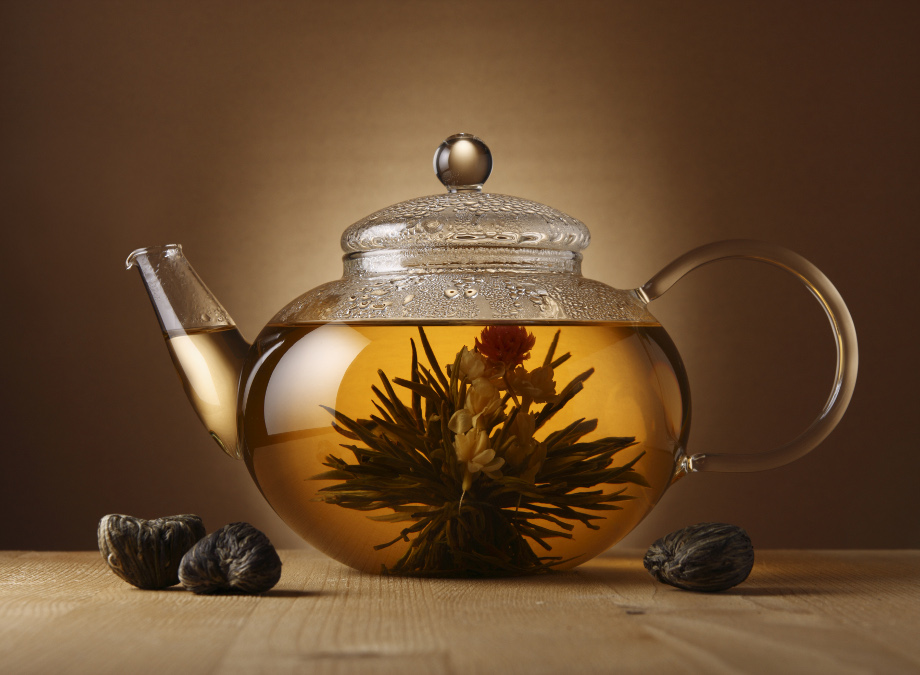

Western Brewing Style
The Western style of brewing tea denotes using a large teapot or infuser and steeping tea leaves for an extended period of time – usually a one-time process. Because the tea is steeped for a longer period of time, a smaller amount of tea is typically needed and the leaves are usually discarded after one or two steepings.
